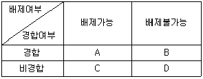
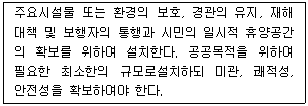
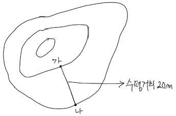
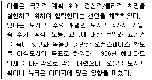
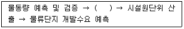
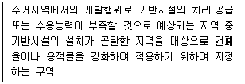
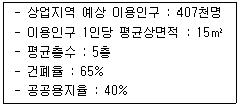
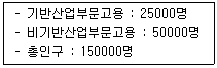
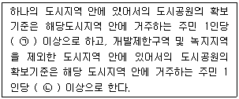

도시계획기사 (2018-03-04 기출문제)
1과목: 도시계획론
1. 우리나라에서 도시계획의 민주화와 공개화를 위해 지역주민에게 공청회나 의견청취 등의 기회를 부여하는 주민참여가 제도화된 시기는?
- 1960년대
- 1970년대
- 1980년대
- 1990년대
(정답률: 77%)

2. 도시계획시설 사업의 단계별 집행계획에 대한 설명으로 옳지 않은 것은?
- 단계별 집행계획에는 재원조달계획과 보상계획 등이 포함되도록 한다.
- 단계별 집행계획을 수립하거나 송부 받았을때에는 7일 이내에 공고하여야 한다.
- 단계별 집행계획은 특별시장, 광역시장, 시장 또는 군수가 수립할 수 있다.
- 도시계획시설 부지로 예정된 토지는 건축, 토지형질변경 등 개발행위가 제한되므로 장기간 도시계획사업이 시행되지 않을 경우 토지 소유자에 불이익이 발생함으로 이를 방지하기 위해서 단계별 집행계획을 수립하고 있다.
(정답률: 62%)
3. 용도지역지구제의 설명 중 옳지 않은 것은?
- 토지의 효율적인 이용 및 관리를 위해서 지정한다.
- 하나의 용도지역에 2개 이상의 용도지구가 지정될 수 있다.
- 도시지역의 용도지역은 크게 주거지역, 상업지역, 공업지역, 녹지지역, 관리지역으로 구분된다.
- 용도지역지구제의 문제점을 보완하기 위해서 개발권 양도(TDR), 복합용도개발(MXD)과 같은 제도가 생겨나고 있다.
(정답률: 67%)
4. 도시·군계획시설의 도로를 구분하는 기준이 아닌 것은?
- 규모
- 기능
- 등급
- 사용 및 형태
(정답률: 84%)
5. 도시의 구성요소 및 도시화에 대한 설명으로 옳지 않은 것은?
- 시민은 도시를 구성하는 가장 기본적인 요소이다.
- 도시 활동을 수용하고 지원하기 위해 토지 및 시설이 필요하다.
- 게데스(P. Geddes)는 도시 활동을 생활, 생산, 위락의 세 가지 요소로 구분하였다.
- 도시화의 컨트롤 수단으로써 인구이동의 통제는 토지이용규제보다 더 유효하고 적법하다.
(정답률: 79%)
6. 용도지역제인 유클리드 지역제(Euclidean zoing)에 대한 설명으로 옳지 않은 것은?
- 과도한 민간개발을 막기 위하여 개발촉진보다는 억제에 더 관심을 두었다.
- 실제의 토지이용에 근거하여 발생하는 각종 결과를 기준하여 규제하는 성과규제지역제이다.
- 토지이용의 규제단위를 각각의 필지로 하여 이를 통해 양호한 시가지를 형성하고자 하였다.
- 상위용도(주거 등)를 하위용도(공장 등)로 부터 보호하면 충분하다는 전제 하에 누적식 지역제를 채택하였다.
(정답률: 55%)
7. 영국의 도시학자 하워드(E. Howard)가 제시한 전원도시에 대한 설명으로 옳지 않은 것은?
- 경제기반이 확보되어야 한다.
- 전원도시들은 서로 독립적이다.
- 계획인구는 3만명 정도로 한다.
- 주변에는 충분한 농업지대가 존재한다.
(정답률: 77%)
8. 인구증가에 따른 집적의 순이익이 감소하기시작하여 집적의 이익과 불이익이 같아지는(집적의 순이익이 0이되는)때까지 나타나는 도시화 현상은?
- 재도시화
- 분산적 도시화
- 집중적 도시화
- 역도시화와 탈도시화
(정답률: 60%)
9. 20세기 이후에 발표된 도시계획 헌장 중 최초의 도시계획 헌장으로 세계 도시계획 및 설계 분야의 발전에 많은 영향을 미친 것은?
- 아테네 헌장
- 메가리드 헌장
- 마추픽추 헌장
- 뉴어바니즘 헌장
(정답률: 81%)
10. 개별 필지에 대한 규제사항 및 토지이용계획 사항을 확인하는 것으로, 해당 토지에 대한 용도지역·지구·구역, 도시·군계획시설, 도시계획사업과 입안내용, 각종 규제에 대한 저촉 여부 등을 확인할 수 있는 자료는?
- 토지대장
- 건축물대장
- 토지특성조사표
- 토지이용계획확인서
(정답률: 80%)
11. 경합성과 배제성에 따른 재화의 분류에서 대가를 지불할 필요성이 없고, 소비를 제한할 방법이 없기 때문에 아무도 생산하려고 하지 않아 공공의 개입이 필요한 재화는 다음 중 어디에 속하는가?(오류 신고가 접수된 문제입니다. 반드시 정답과 해설을 확인하시기 바랍니다.)

- A
- B
- C
- D
(정답률: 61%)
12. 도시 및 주거환경정비법에 근거한 정비사업에 속하지 않는 것은?
- 재개발사업
- 재건축사업
- 주거환경개선사업
- 주거환경관리사업
(정답률: 77%)
13. 현재 인구가 50만명인 도시에서 등비급수적으로 연평균 2%씩 인구가 증가한다면 10년후의 추정 인구수(명)는? (단, 1.029=1.195, 1.0210=1.219, 1.0211=1.243)
- 550000
- 597500
- 609500
- 621500
(정답률: 69%)
14. 도시·군계획시설의 결정·구조 및 설치에 대한 설명으로 옳지 않은 것은?
- 둘 이상의 도시·군 계획시설을 같은 토지에 함께 결정할 수 없으며, 반드시 단일 용도로 도시·군계획시설을 결정하여야 한다.
- 도시·군계획시설에 대해 고시일로부터 20년이 지날 때까지 사업이 시행되지 않으면 고시일로 부터 20년이 지난 다음 날에 그 효력이 상실된다.
- 건축시설물의 규모로 인해 공간 이용에 상당한 영향을 주는 도시·군계획시설인 경우에는 건폐율·용적률 및 높이의 범위를 함께 결정하여야 한다.
- 도시지역에 건축물인 도시·군계획시설이나 건축물과 연계되는 도시·군계획시설 결정시 도시·군계획시설 결정을 할 수 있다.
(정답률: 74%)
15. 도시계획의 수립과정으로 옳은 것은?
- 목표설정 → 상황의 분석 및 미래의 예측 → 대안설정 및 평가 → 집행
- 상황의 분석 및 미래의 예측 → 목표설정 → 대안설정 및 평가 → 집행
- 상황의 분석 및 미래의 예측 → 대안설정 및 평가 → 목표설정 → 집행
- 목표설정 → 대안설정 및 평가 → 상황의 분석 및 미래의 예측 → 집행
(정답률: 65%)
16. 가도시화(Pseudo-urbanization)에 대한 설명으로 옳은 것은?
- 도시의 고용능력을 넘어선 인구집중으로 인해 발생한 현상이다.
- 3차 산업에 비하여 2차 산업의 비중이 높은 도시에서 주로 발생한다.
- 농촌의 주택부족으로 인해 베드타운의 기능이 강한 인근 도시로의 인구 이동 현상이다.
- 경제기반이 약한 개발도상국의 도시에서 비공식부문보다 공식부문에의 취업인구가 많아지는 현상이다.
(정답률: 81%)
17. 다음 설명에 해당하는 시설은?

- 공동구
- 유수지
- 방조설비
- 공공공지
(정답률: 80%)
18. GIS에 대한 설명으로 옳지 않은 것은?
- GIS를 이용한 공간분석을 통해 입력된 정보를 지리적으로 검색하고 표현할 수 있다.
- 벡터 자료는 정방형 셀을 자료저장과 표현의 기본단위로 하기 때문에 격자형태의 결과물을 생성하게 된다.
- 기술적인 측면 뿐 아니라 GIS를 사용하는 지원인력 및 시설의 측면을 모두 망라하는 것으로 파악한다.
- 지리·공간 정보를 받아들여 체계적으로 저장·검색·변형·분석하고, 사용자에게 유용한 새로운 형태의 정보로 표현하는 등의 작업을 수행하기 위한 기술이나 작동과정 혹은 도구이다.
(정답률: 77%)
19. 계획이론 중 다비도프(Davidoff)에 의해 주창되었으며, 1960년대 미국의 법조계에서 형성된 피해구제절차와 같은 사회제도를 계획개념으로 수용하여 주로 강자에 대한 약자의 이익을 보호하는데 적용된 이론은?
- 종합적 계획
- 교류적 계획
- 급진적 계획
- 옹호적 계획
(정답률: 83%)
20. 환경과 개발에 관한 유엔회의(UNCED)에서 개발과 환경을 조화시키는 도시개발에 대한 내용으로 옳은 것은?
- 지속가능한 도시개발
- 도·농 통합적 도시개발
- 자원·에너지절약형 도시개발
- 입체적·기능 통합적 도시개발
(정답률: 79%)
2과목: 도시설계 및 단지계획
21. 국토의 계획 및 이용에 관한 법률상 지구단위계획구역의 지정목적을 이루기 위하여 지구단위계획에 반드시 포함되어야 하는 사항은? (단, 기존의 용도지구를 폐지하고 그 용도지구에서의 건축물이나 그 밖의 시설의 용도·종류 및 규모 등의 제한을 대체하는 사항을 내용으로 하는 지구단위계획은 고려하지 않는다.)
- 교통처리계획
- 환경관리계획 또는 경관계획
- 건축물의 배치·형태·색채 또는 건축선에 관한 계획
- 건축물의 용도제한, 건축물의 건폐율 또는 용적률, 건축물 높이의 최고한도 또는 최저한도
(정답률: 66%)
22. 샹디가르(Chandigarh)에 적용된 공원녹지 체계유형은?
- 격자형
- 대상형
- 분산형
- 집중형
(정답률: 61%)
23. 다음 중 건축물의 특정 층이 계획에서 정한 면의 수직면을 넘어 돌출하여 건축할 수 없는 것으로, 보행공간이나 공동주차통로 등의 확보가 필요한 곳에 지정하는 것은?
- 건축지정선
- 건축한계선
- 벽면지정선
- 벽면한계선
(정답률: 55%)
24. 도로망 계획의 일반적인 원칙으로 옳지 않은 것은?
- 토지로의 접근과 이동성을 동시에 고려해야 한다.
- 도로의 횡단면은 도로의기능 분류와 계획 교통량에 따라 선정한다.
- 기능에 따라 도로를 분류하되, 항상 통과교통은 적극적으로 방지하도록 계획한다.
- 도로 체계가 물리적으로 환경에 잘 융합하고 적당한 시거를 확보하도록 직선구간과 곡선구간을 조합한다.
(정답률: 74%)
25. 레드번 계획의 특징으로 적절하지 않은 것은?
- 보차분리의 원칙이 강조 되었다.
- 대가구(Superblock) 개념을 기본으로 한다.
- 자동차 도로의 기능을 통합 일원화 하였다.
- 기능에 따른 4가지 종류의 도로로 구분하였다.
(정답률: 70%)
26. 경관상세계획의 수립 대상 지역에서 경관상세계획을 수립하는 경우의 고려사항으로 가장 거리가 먼 것은?
- 문화재 · 산 · 수변 및 특정 건축물의 조망권을 확보하기 위하여 조망점을 설정하는 경우 근경보다 원경이 원활하게 확보되도록 한다.
- 당해 구역의 미래상을 개개의 건축물을 통하여 체험하는 것이 아니라 구역전체를 미래지향적인 관점에서 입체적으로 체험할 수 있도록 한다.
- 안내표지판·가로시설물 등은 당해 구역의 이미지를 연출하는데 중요한 역할을 하므로, 새로운 경관미를 연출하여 구역분위기의 특성과 정체성을 인지할 수 있도록 구체적인 설치기준을 제시한다.
- 지표물은 주민이나 방문자에게 방향감을 제공하는 등 당해 지역에 대한 이미지를 강화시켜줄 수 있도록 상징적 요소를 개발하여 적재적소에 배치하도록 한다.
(정답률: 66%)
27. 다음 가 - 나 두 지점 사이의 경사가 10%일때 두지점의 표고차(등고차)는?

- 1m
- 2m
- 20m
- 200m
(정답률: 68%)
28. 건폐율 60%로 규제되고 있는 지역에 지상 5층, 연면적 3,000m2의 건물을 짓고자 할 때 필요한 최소한의 대지면적은?
- 800m2
- 900m2
- 1,000m2
- 1,200m2
(정답률: 70%)
29. 향(向)분석에 관한 설명이 옳지 않은 것은?
- 태양과 기후 조건에 효율적으로 대처하는 구조를 찾아낼 수 있다.
- 향(向)이 변화함에 따라 주택의 형태가 적응할 수 있도록 해야 한다.
- 태양과 식생은 단지에서 주호군의 향을 결정하는데 가장 영향을 미치는 주 요소이다.
- 강풍에 의한 피해를 방지하기 위해서 주호군의 형태는 날개와 같은 모양으로 되어 바람이 그 위를 미끄러져 가게 하는 것이 좋다.
(정답률: 61%)
30. 생활권의 위계가 큰 것에서 작은 것으로 올바르게 나열한 것은?
- 근린주구 → 근린분구 → 인보구 → 지역(지구)
- 지역(지구) → 근린주구 → 근린분구 → 인보구
- 지역(지구) → 인보구 → 근린주구 → 근린분구
- 지역(지구) → 근린분구 → 인보구 → 근린주구
(정답률: 81%)
31. 도시설계의 보너스 제도와 관련된 설명으로 적합하지 않은 것은?
- 인센티브 제공을 위해 확보되는 쾌적요소(Amenity unit)는 사유지 내에 확보되는 가로광장이나 아케이드 등의 공개공지가 대표적이다.
- 성능지역지구제(performance zoning)는 전통적인 기준인 토지의 용도를 결정하고 상세한 설계기준에 의거하여 토지의 성능을 판단하는 제도이다.
- 보상지역지구제(incentive zoning)는 개발자에게 적당한 개발 보너스를 부여하는 대신 공공에게 필요한 쾌적요소를 제공하도록 유도하기 위해 개발된 방법이다.
- 조건부지역제(conditional zoning)는 민간개발이 지역지구제 조례에서 제시하고 있는 특별 조건을 만족하는 경우, 민간의 요구에 부응하여 해당 토지의 용도를 재지정하는 방법이다.
(정답률: 59%)
32. 주택건설기준 등에 관한 규정상 2000세대 이상의 공동주택을 건설하는 주택단지는 기간도로와 접하거나 기간도로로부터 당해 단지에 이르는 진입도로의 폭을 최소 얼마 이상으로 하여야 하는가?
- 8m 이상
- 12m 이상
- 15m 이상
- 20m 이상
(정답률: 64%)
33. 주거형 지구단위계획에서의 동선계획에 대한 설명으로 부적합한 것은?
- 국지도로망은 컬데삭(Cul-de-sac)과 루프형(loop) 등으로 구성한다.
- 집산도로 상호간의 교차 또는 집산도로와 국지도로의 교차는 입체교차를 원칙으로 한다.
- 회전차로 및 변속차로의 폭은 3m를 기준으로 하되, 필요한 경우 0.25m의 가감이 가능하다.
- 집산도로망의 구성형식은 토지이용 형식에 따라 계획하되, 보조간선도로와의 연결이 용이하도록 가급적 격자형으로 구성하며 근린주구를 통과하지 못하도록 한다.
(정답률: 51%)
34. 미국의 동남부지역을 중심으로 시작된 도시 설계 패러다임인 뉴어바니즘(New Urbanism)에 대한 설명으로 옳지 않은 것은?
- 슈퍼블록을 활용한 보행권 확보에 초점을 둔다.
- 압축적이고 복합적인 용도의 토지이용을 추구한다.
- 도시의 무분별한 확산에 의해 발생하는 도시 문제를 극복하기 위한 대안으로 시작되었다.
- 전통적 근린지역(TND : Traditional Neighborhood District)도 뉴어바니즘의 주요 계획기법 중 하나이다.
(정답률: 50%)
35. 주거단지환경의 이론가에 관한 다음의 연결이 옳지 않은 것은?
- 전원도시 - E. Howard
- 빛나는 도시 - Le Corbusier
- 래드번단지계획 - F.L. Wright
- 할로우(Harlpw)도시 - F. Gibberd
(정답률: 59%)
36. 도시공원 및 녹지 등에 관한 법률에 의한 경관녹지의 주요 기능으로 가장 옳은 것은?
- 재해발생시 주민의 피난지대 확보
- 도시의 자연적 환경 보전 또는 개선
- 대기오염, 소음, 진동 등 공해의 차단 및 완화
- 도시민에게 산책공간으로 제공하는 선형의 녹지
(정답률: 65%)
37. 지구단위계획 수립 시 각 용지별 토지이용계획 수립기준으로 옳지 않은 것은?
- 일조권을 감안하여 단독주택 용지가 아파트 용지의 진북방향으로 입지하는 때에는 충분한 이격 거리가 유지되도록 하여야 한다.
- 녹지용지는 쾌적한 주거환경을 조성하는데 필요한 근린공원·어린이공원·완충녹지·경관녹지·광장·보행자전용도로·친수공간 등으로 구획한다.
- 상업용지는 주거용지 면적의 5% 내외에서 계획하는 것을 원칙으로 하되, 당해 구역의 경제권 및 생활권의 규모와 구조 등을 감안하여 적정한 비율을 확보하도록 한다.
- 주거용지와 면하는 철도부지변에는 폭 30m미만의 완충녹지, 폭 25m 이상의 도시·군계획 도로변에는 폭 10m 미만의 완충녹지를 설치하는 것이 바람직하다.
(정답률: 65%)
38. 주거단지계획의 목표로서 적당하지않은 것은?
- 개발비용의 효율성
- 공간적 기능성의 충족
- 프라이버시 확보를 위한 공동체의 배제
- 안전성 및 건강성 확보를 통한 복리후생의 증진
(정답률: 76%)
39. 케빈 린치(Kevin Lynch)가 제안한 도시를 이미지화하는 물리적 구조에 관한 요소가 아닌 것은?
- 통로(Path)
- 가장자리(Edge)
- 결절점(Node)
- 조경(Landscape)
(정답률: 76%)
40. 아래의 설명에 해당되는 것은?

- 리우선언
- 전원도시협의회
- 근대건축국제회의
- 빛나는 도시계획가협회
(정답률: 55%)
3과목: 도시개발론
41. 다음 중 개발권양도제(TDR)에 대한 설명으로 가장 거리가 먼 것은?
- 도시기반시설의 설치를 위한 제도
- 공개공지와 농지의 보전을 위한 제도
- 역사적 건조물을 보전하기 위한 제도
- 토지이용규제에 따른 손실을 보상하기 위한 제도
(정답률: 53%)
42. 도시개발사업의 타당성분석을 통하여 얻을 수 있는 효과가 아닌 것은?
- 상품기획
- 시장조사
- 표적시장 선정
- 도시개발 수요 예측
(정답률: 45%)
43. 다음 중 부동산과 금융을 결합한 형태로서 부동산 투자의 약점으로 꼽히는 유동성 문제와 소액투자 곤란의 문제를 증권화라는 방식을 이용하여 해결하고 있는 것은?
- 리츠(REITs)
- 건설-운영-이전(BOT)
- 사모투자전문회사(PEF)
- 자산담보부증권(ABS)
(정답률: 78%)
44. 환지방식의 도시개발에서 "감보"와 관련한 설명 중 틀린 것은?
- 감보율의 결정은 일률적일 수 없다.
- 감보의 종류에는 연도감보와 민간감보가 있다.
- 사업비용의 충당과 공공시설의 설치를 위한 용지를 부담해야 하기 때문에 발생한다.
- 환지계획구역이 평균 토지부담률은 50%를 초과할 수 없다.
(정답률: 55%)
45. 다음 중 관광특구에 대한 설명이 옳지 않은 것은?
- 관광특구는 외국인 관광객의 유치 및 관광활동의 편의 증진을 목적으로 재정되었다.
- 관광특구는 시장 · 군수 · 구청장의 신청에 따라 시 · 도지사가 지정할 수 있다.
- 서울의 명동, 이태원, 동대문패션타운 등이 관광특구에 속한다.
- 관광특구는 관광의 수요를 충족할 수 있는 지역을 집중적으로 특구 지정을 통해 개발 하는 것이다.
(정답률: 39%)
46. 다음 중 도시개발 전략의 수립시 고려할 사항으로 옳지 않은 것은?
- 다양한 재무적 투자형태를 고려하여 가장 바람직한 지분구조를 도출한다.
- 사회적목표, 재무적 목표, 비즈니스 계획 등을 포함하여 전반적인 기본구상을 설정한다.
- 개발기본계획의 내용은 고려하지 않고, 시장과 경쟁시설에 대한 개략적인 분석만으로 재무적 타당성을 결정한다.
- 부지 및 주변지역의 기반시설, 지형, 지세, 각종 규제, 토지이용계획 등을 고려하여 개발대상지를 분석한다.
(정답률: 78%)
47. 물류단지의 계획 중에서 개발수요의 예측 시 다음의 2단계에서 고려할 사항은?

- 법/제도적 검토
- 조립/가공 기술검토
- 개발계획 분석을 통한 규모 산정
- 화물의 유통단지 경유비율 설정
(정답률: 61%)
48. [국토의 계획 및 이용에 관한 법률] 상 다음과 같이 설명되는 구역은?

- 입지규제최소구역
- 시가화조정구역
- 도시자연공원구역
- 개발밀도관리구역
(정답률: 75%)
49. 바다, 하천, 호수 등 수변공간을 가지는 육지에 개발된 공간을 무엇이라 하는가?
- 워터프론트
- 역세권
- 지하공간
- 텔레포트
(정답률: 80%)
50. 도시화의 단계에 관한 설명으로 옳지 않은 것은?
- 도시화 단계는 도시지역에 인구집중이 일어나기 때문에 도시지역의 주거환경 정비와 개선이 중요한 문제가 된다.
- 교외화 단계에서는 교외지역의 도시개발이 활성화되기 때문에 도심으로의 통근교통문제와 도시의 외연적 확장이 문제가 된다.
- 반도시화 단계에서는 도시민들의 소득향상과 쾌적한 환경을 찾아 농촌지역으로 이동하는 현상이 일어나 도심부의 쇠퇴 현상이 두드러지게 나타난다.
- 재도시화 단계에서는 재개발사업과 주거환경 개선으로 교외지역에 새로운 개발 수요가 나타난다.
(정답률: 64%)
51. 다음 중 사업타당성을 판단할 수 없는 도시개발 사업은?
- A사업의 순현재가치(FNPV)가 1000억원이다.
- B사업의 내부수익률(FIRR)은 10%이며, 기대수익률은 9%이다.
- C사업의 비용편익비(B/C Ratio)가 0.95이다.
- D사업은 1년차에 비용이 1000억원 발생하고, 5년차에 수익이 1100억원 발생하였다.
(정답률: 62%)
52. 시장에서 이루어지는 도시개발 과정에 공공(公共)이 개입하는 이유로 거리가 먼 것은?
- 시장실패
- 공공재정 확충
- 세대간 형평성
- 자연환경의 불가역성
(정답률: 52%)
53. 다음 중 Robert Goodland(1994)가 제안한 지속 가능한 도시개발을 위한 지속성의 분류에 해당하지 않는 것은?
- 기술적 지속성 : 과학, 기술개발
- 사회적 지속성 : 문화, 역사, 제도
- 경제적 지속성 : 경제자본, 산업, 사업
- 환경적 지속성 : 환경의 질, 생태계 용량, 자연자원
(정답률: 56%)
54. 토지의 취득방식에 따른 개발방식의 설명으로 틀린 것은?
- 토지 취득방식에 따라 개발방식을 분류하면 환지방식, 수용·사용방식, 전면매수방식, 혼용방식, 신탁개발방식으로 구분할 수 있다.
- 신탁개발방식은 신탁회사가 토지소유권을 이전받아 토지를 개발한 후분양하거나 임대하여 그 수익을 신탁자에게 돌려주는 방식이다.
- 혼용방식은 한 사업지구 안에서 수용·사용방식과 환지방식을 혼합하여 적용하는 방식이다.
- 전면매수방식은 사업 후 개발토지 중 사업에 소요된 비용을 충당하기 위한 토지와 공공용지를 제외한 토지를 원소유자에게 되돌려주는 방식이다.
(정답률: 77%)
55. 다음 조건에 따른 상업용지의 수요 면적은?

- 0.75km2
- 1.13km2
- 3.13km2
- 5.81km2
(정답률: 72%)
56. 재개발을 시행하는 방식에 따른 분류에 해당하지 않는 것은?
- 수복재개발
- 단지재개발
- 보존재개발
- 전면재개발
(정답률: 72%)
57. 다음 중 가구 분할 계획으로 가장 거리가 먼 것은?
- 단독주택지의 소가구 방향은 주택의 남향배치가 용이하도록 가능한 동서장방형으로 한다.
- 대로변 완충녹지와 접하게 되는 단독주택지의 소가구는 가능한 2열 가구로 구성한다.
- 대가구의 규모는 어린이 놀이터의 이용반경과 소가구의 적절한 조합방식에 이해 결정된다.
- 상업편익시설용지의 가구구성은 일반적으로 대로변에 접하게 되는 바깥가구를 안쪽가구보타 크게 구획한다.
(정답률: 61%)
58. 도시개발을 위한 재원조달 방식 중 "지분조달방식"이 "부채조달방식"에 비하여 갖는 단점으로 옳지 않은 것은?
- 자본시장의 여건에 따라 조달이 민감한 영향을 받는다.
- 조달 규모의 증대로 소유주의 지분 축소가 불가피하다.
- 기업가치의 불안정으로 매매활성화에 한계가 있다.
- 중소기업의 경우 신용이 취약한 기업은 차입수단, 규모, 시기, 비용 상의 문제점이 존재한다.
(정답률: 48%)
59. 텔레포트단지 개발에서 통신설비의 배치방식과 거리가 먼 것은?
- 중심배치형
- 외곽배치형
- 분리배치형
- 내부배치형
(정답률: 49%)
60. 도시개발사업에 필요한 경비를 충당하기 위한 방법은?
- 체비지 매각
- 원인자 부담금
- 수익자 부담금
- 국고 보조금
(정답률: 74%)
4과목: 국토 및 지역계획
61. A 지역의 고용통계가 아래와 같을 때, 지역발전의 경제기반이론에 기초하여 산정한 A지역의 기반승수는?

- 0.17
- 0.50
- 2.00
- 3.00
(정답률: 56%)
62. 수도권정비위원회의 심의 내용이 아닌 것은?
- 종전대지의 이용 계획에 관한 사항
- 대규모 개발사업의 개발 계획에 관한 사항
- 도시·군관리계획의 수립 및 변경에 관한 사항
- 과밀억제권역에서 추진될 공업지역의 지정에 관한 사항
(정답률: 54%)
63. 다음 중 국토계획과 지역계획의 성격으로 옳지 않은 것은?
- 국토계획 : 분배계획의 성격을 갖는다.
- 국토계획 : 조언적계획의 성격을 갖는다.
- 지역계획 : 미래 지향적 계획의 성격을 갖는다.
- 지역계획 : 단일한 이념체계로 구성되는 성격을 갖는다.
(정답률: 72%)
64. 지역의 외부수요가 지역경제의 성장을 선도함을 전제한 모형은?
- 섹터모형
- 수출기반모형
- 지역혁신모형
- 투입산출모형
(정답률: 68%)
65. 지역을 동질지역과 결절지역으로 분류한 학자는?
- 후버(E.M.Hoover)
- 퍼로프(H.S.Perloff)
- 로젠버그(N.Rosenberg)
- 리차드슨(H.Richardson)
(정답률: 42%)
66. 생산요소의 지역간 이동이 자유롭게 허용된다면 자연히 지역 간 형평은 달성된다고 보는 지역 균형성장론에 해당하는 것은?
- 종속이론
- 누적인과모형
- 성장거점이론
- 신고전학파의 지역경제성장이론
(정답률: 67%)
67. 제1차 국토종합개발계획에서의 권역 설정으로 옳은 것은?
- 9개 광역생활권
- 4개 대도시경제권
- 4대권 8중권 17소권
- 28개 지방정주생활권
(정답률: 67%)
68. 다음 중 컴팩트 시티(Compact City)에 대한 설명으로 옳지 않은 것은?
- 고밀개발을 통해 도심의 지가를 안정시킨다.
- 도시의 무분별한 교외확산을 방지 할 수 있다.
- 인프라 및 에너지의 효율적 이용을 도모할 수 있다.
- 주거와 직장 및 도시 서비스의 분리를 최소화 한다.
(정답률: 72%)
69. 지역획정의 원칙 중 동일한 중심결절과 관계를 가지고 있는 주변 지역을 하나의 지역으로 통합했을 때 적용한 원칙은?
- 계획성의 원칙
- 동질성의 원칙
- 기능결합의 원칙
- 순위규모의 법칙
(정답률: 53%)
70. 지역문제가 발생하는 원인으로 틀린 것은?
- 지역마다 가지고 있는 자연자원 또는 입지적 조건의 차이가 있기 때문에 발생한다.
- 지역분석에 대한 기술의 개발에 따라 상대적인 비교 방법이 발달하였기 때문에 발생한다.
- 지역마다 특유한 산업구조를 갖게되며 이것이 경제적으로 영향을 주기 때문에 발생한다.
- 지역주민의 발전의지, 발전이나 성장에 유익한 가치관이나 문화적 특성이 지역마다 다르기 때문에 발생한다.
(정답률: 63%)
71. 지역계획의 근본적 목적에 어긋나는 것은?
- 지역자원의 효율적 이용
- 지역주민의 평등성 유지
- 개발정책의 효과성 제고
- 지역적 집중투자로 경쟁력 강화
(정답률: 60%)
72. 다음의 도시계획이론 중 상황의 종합적 분석과 최적의 대안선택이 가능하다고 보는 규범적이며 이상적인 접근방법은?
- 합리적 접근방법
- 만족화 접근방법
- 점진적 접근방법
- 혼합주사적 접근방법
(정답률: 68%)
73. 도시규모 이론에 있어서 대도시론을 주장한 학자는?
- 언윈(R. Unwin)
- 코미(T. Comey)
- 하워드(E. Howard)
- 테일러(G.R. Taylor)
(정답률: 47%)
74. 다음 중 도시공간의 확장과 분화는 지속적인 침입(Invasion)과 계승(Succession)의 과정을 통해 이루어진다고 설명하는 도시 공간 구조 이론은?
- 다핵이론
- 선형이론
- 동심원이론
- 다차원이론
(정답률: 59%)
75. 사회간접자본의 민자유치 방법 중 BOT방식에 대한 설명으로 옳은 것은?
- 공공이 건설, 운영, 소유권을 담당하다가 일정 기간이 지나면 민간에 매각 이전하는 사업방식
- 민간이 건설하고 일정기간 운영하며 수익을 취득한 후 정부에 시설을 이전시키는 사업방식
- 민간이 건설하고 운영하며, 민간이 운영에 실패하면 일정조건하에 다른 민간 기업에 이전시키는 사업방식
- 정부가 건설하고 운영하며, 민간이 운영한 후 민간의 운영 효율성이 검증되면 일정 조건하에 민간에 시설을 이전시키는 사업방식
(정답률: 72%)
76. 레닌(V. I. Lenin, 1993)이 종속이론에서 주장한 후진국의 자본주의적 발전 특성으로 옳은 것은?
- 선진 자본주의 국가의 자본은 후진국을 지배하지 않는다.
- 선진 자본주의 국가는 후진국에 대한 국제적 독점권을 형성한다.
- 선진 자본주의 국가는 후진국에서 경제적 상호주의의 입장을 취한다.
- 선진 자본주의 국가의 자본은 후진국에서 많은 이윤을 남기고, 이것을 후진국에 재투자한다.
(정답률: 60%)
77. 2003년 도입된 국토의 계획 및 이용에 관한 법률의 내용으로 옳지 않은 것은?
- 도시관리계획은 광역도시계획 및 도시기본 계획과 부합되게 입안한다.
- 개발행위허가제도 실시지역을 도시지역에서 전 국토로 확대하여 적용한다.
- 전 국토를 종전 4개의 용도지역에서 5개의 용도지역으로 세분화하여 난개발을 방지한다.
- 종전 국토이용관리법의 적용대상이었던 비도시지역에도 도시기본계획 및 도시관리계획을 수립하도록 한다.
(정답률: 60%)
78. 다음 중 수출기반모형에 대한 설명으로 옳지 않은 것은?
- 정부지출 또는 민간투자의 역할이 중요시된다.
- 경제구조를 기반활동과 비기반활동으로 구분한다.
- 도시의 성장은 기반산업의 성장에 의해 주도된다.
- 산업구조가 변해도 경제기반승수가 일정하다는 가정은 비현실적이다.
(정답률: 51%)
79. 지역의 소득격차를 측정하는 방법이 아닌 것은?
- 지니계수
- 허프모형
- 로렌츠곡선
- 쿠즈네츠비
(정답률: 65%)
80. 지역 교통계획의 분포통행량 예측(trip distribution)에서 성장인수법(growth factor method)에 해당되지 않는 것은?
- 중력모형(gravity model)
- 프라타모형(fratar model)
- 디트로이트모형(detroit model)
- 평균성장인수법(average growth factor method)
(정답률: 54%)
5과목: 도시계획관계법규
81. 택지개발촉진법이 지향하는 것이 아닌 것은?
- 시급한 주택난 해소
- 국민 주거생활의 안정
- 택지의 소유 상한 설정
- 택지의 취득·개발·공급 및 관리
(정답률: 66%)
82. 도시·군관리계획 입안에 있어 주민 의견 청취 공고 및 공람에 관한 설명 중 옳은 것은?
- 중앙지 일간신문에 1회 이상 공고하고 14일간 일반이 열람할 수 있도록 하여야 한다.
- 중앙지 일간신문에 2회 이상 공고하고 20일간 일반이 열람할 수 있도록 하여야 한다.
- 해당 지역을 주된 보급지역으로 하는 하나의 일간신문에 공고하고 14일간 일반이 열람할 수 있도록 하여야 한다.
- 해당 지역을 주된 보급지역으로 하는 2 이상의 일간신문과 해당 시군의 인터넷 홈페이지에 14일 이상 일반이 열람할 수 있도록 하여야 한다.
(정답률: 58%)
83. 다음 중 수도권 정비계획법령상 과밀부담금을 내야 하는 인구집중 유발시설에 해당하지 않는 것은?
- 공공청사
- 연수시설
- 업무용 건축물
- 판매용 건축물
(정답률: 48%)
84. 지방도시계획위원회를 설치할 수 없는 관할 구역은?
- 도
- 읍
- 광역시
- 자치구
(정답률: 66%)
85. 건축법에 따른 건축허가의 제한에 관한 설명이 옳지 않은 것은?
- 특별시장·광역시장·도지사가 도시·군계획에 특히 필요하다고 인정하여 건축허가를 제한하고자 하는 경우에는 지방도시계획위원회의 심의를 거쳐야 한다.
- 국토교통부장관이 건축허가를 제한하는 경우 그 내용을 상세하게 정하여 허가권자에게 통보하고, 통보를 받은 허가권자는 지체없이 이를 공고하여야 한다.
- 특별시장·광역시장·도지사가 지역계획에 특히 필요하다고 인정하여 시장·군수·구청장의 건축허가를 제한한 경우 즉시 국토교통부장관에게 보고하여야 한다.
- 국토교통부장관은 국토관리를 위하여 특히 필요하다고 인정하는 경우 건축허가의 제한 기간을 2년 이내로 하며, 1회에 한하여 1년 이내의 범위에서 제한기간을 연장할 수 있다.
(정답률: 41%)
86. 주차장의 효율적인 설치 및 관리 운영을 위하여 지방자치단체에 설치하는 주차장특별회계의 설치 등에 관한 설명으로 옳지 않은 것은?
- 시장, 군수, 구청장이 설치할 수 있다.
- 지방도시교통사업특별회계와 통합하여 운용할 수 있다.
- 노외주차장의 설치자에게 노외주차장의 설치 비용의 일부를 보조할 수 있다.
- 부설주차장의 설치자에게 부설주차장의 설치 비용의 일부를 융자할 수 없다.
(정답률: 69%)
87. 다음 중 도시·군관리계획으로 결정할 수 없는 용도지구는?
- 경관지구
- 보존지구
- 침수지구
- 시설보호지구
(정답률: 72%)
88. 다음 중 국토의 계획 및 이용에 관한 법률에 따른 용도구역의 종류가 아닌 것은?
- 개발제한구역
- 시가화조정구역
- 도시자연공원구역
- 특정시설제한구역
(정답률: 51%)
89. 통행의 안전과 차량의 소통을 원활하게 하기위해서 도로의 교차각과 너비에 따라 교차점으로부터 후퇴하는 것은?
- 사선 제한
- 도로 경계선
- 건축 지정선
- 도로모퉁이의 길이
(정답률: 66%)
90. 주택법의 제정목적으로 가장 타당한 것은?
- 주거생활의 안정도모
- 도시의 건전한 발전도모
- 주택건축행정의 지도와 규제
- 택지의 건설 및 공급의 촉진
(정답률: 63%)
91. 도시개발법상 도시개발사업의 환지 계획 작성시 포함하여야 할 사항으로 옳지 않은 것은?
- 환지설계
- 필지별로 된 환지명세
- 축척 1000분의 1 이하의 환지예정지도
- 필지별과 권리별로 된 청산 대상 토지 명세
(정답률: 64%)
92. 수도권정비계획에 관한 설명으로 옳지 않은 것은?
- 수도권정비계획법령상 '수도권'이란 서울특별시와 인천광역시를 말한다.
- 국토교통부장관은 중앙행정기관의 장과 서울특별시장·광역시장 또는 도지사의 의견을 틀어 수도권정비계획안을 입안한다.
- 국토교통부장관은 수도권정비계획안을 수도권정비위원회의 심의를 거친 후 국무회의의 심의와 대통령의 승인을 받아 결정한다.
- 수도권정비계획은 수도권의 도시·군계획, 그 밖에 다른법령에 따른 토지 이용 계획 또는 개발 계획 등에 우선하며, 그 계획의 기본이 된다. 다만, 수도권의 군사에 관한 사항에 대하여는 그러하지 아니하다.
(정답률: 74%)
93. 택지개발촉진법상 간선시설의 설치에 관한 내용으로 옳지 않은 것은?
- 일반적으로 도로는 지방자치단체가 설치한다.
- 간선시설의 설치비용은 설치의무자가 부담한다.
- 일반적으로 상수도시설은 택지개발사업 시행자가 설치한다.
- 주택단지까지의 전기시설은 해당 지역에 전기를 공급하는자가 설치한다.
(정답률: 47%)
94. 수도권정비계획법령상 대규모개발사업에 해당하지 않는 것은?
- [택지개발촉진법]에 따른 사업부지 면적이 100만m2 이상인 택지개발사업
- [주택법]에 따른 사업부지 면적이 100만m2 이상인 주택건설사업 및 대지조성사업
- [산업입지 및 개발에 관한 법률]에 따른 사업부지 면적이 30만m2 이상인 산업단지 개발사업
- [관광진흥법]에 따른 관광지 조성사업으로서 시설계획지구의 면적이 5만m2 이상인 것
(정답률: 51%)
95. 도시 및 주거환경정비법상 조합에 대한 설명으로 옳은 것은?
- 조합은 법인으로 할 수 없다.
- 조합은 그 명칭 중에 "정비사업조합"이라는 문자를 사용하여야 한다.
- 조합은 조합 설립의 인가를 받은 날부터 60일 이내에 등기함으로써 성립한다.
- 조합의 공식적 업무 시작일은 대통령령으로 정하는 사업승인일로부터 시작된다.
(정답률: 55%)
96. 다음 중 노상주차장의 구조·설비기준에 대한 내용으로 옳지않은 것은?
- 주간선도로에 설치하여서는 아니된다.
- 종단경사도가 6%를 초과하는 도로에 설치하여서는 아니 된다.
- 고속도로, 자동차전용도로 또는 고가도로에 설치하여서는 아니된다.
- 지방자치단체의 조례로 따로 정하지 않는 경우 너비 6미터 미만의 도로에 설치하여서는 아니 된다.
(정답률: 60%)
97. '국민주택규모'란 주거전용면적이 1호 또는 1세대당 얼마 이하인 주택을 말하는가? (단, 수도권을 제외한 도시지역이 아닌 읍 또는 면 지역의 경우는 고려하지 않는다.)
- 60m2
- 66m2
- 85m2
- 100m2
(정답률: 68%)
98. 도시·군계획시설의 결정·구조 및 설치기준에 관한 규칙에 관한 내용으로 옳은 것은?
- 도로는 규모별 구분과 기능별 구분이 일치하여야 한다.
- 주차장은 원활한 교통의 연계를 위하여 주간선도로에 진·출입구를 설치하도록 한다.
- 철도역은 제1종전용주거지역·보전녹지지역 및 보전관리지역 외의 지역에 설치하여야 한다.
- 교차점광장은 각종 차량과 보행자 흐름을 방해할 우려가 있으므로 주요도로의 교차지점에는 가급적 설치를 피한다.
(정답률: 56%)
99. 다음은 도시공원 및 녹지 등에 관한 법령에 따른 도시공원의 면적기준이다. ㉠과 ㉡에 들어갈 말로 모두 옳은 것은?

- ㉠ : 6m2, ㉡ : 3m2
- ㉠ : 7m2, ㉡ : 4m2
- ㉠ : 8m2, ㉡ : 5m2
- ㉠ : 9m2, ㉡ : 6m2
(정답률: 71%)
100. 건축법상 지역의 환경을 쾌적하게 조성하기 위하여 대통령령으로 정하는 용도와 규모의 건축물에 일반이사용할 수 있도록 설치한 소규모 휴식시설은?
- 공개 공지
- 공공 공지
- 공공 녹지
- 대지안의 공지
(정답률: 59%)